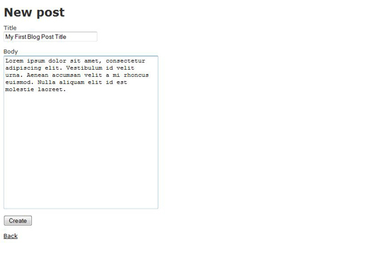
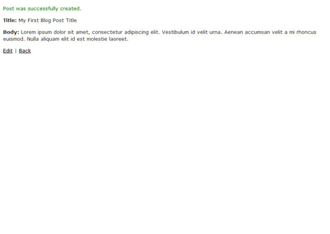
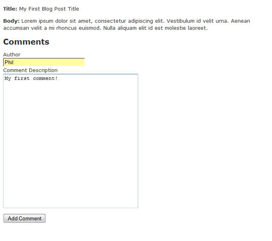
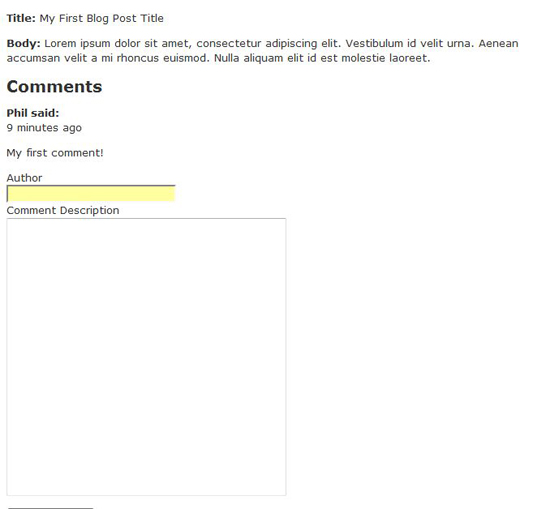

Міністерство освіти і науки України
Національний технічний університет України
“Київський політехнічний інститут”
ІПСА
Кафедра Системного проектування
Створення блогу за допомогою фреймворку
Ruby on Rails
Виконав:
студент групи ДА-21
Круш Ігор
Київ, 2015
Цей посібник покаже вам, як створити базовий блог за допомогою Ruby On Rails. Охоплення основних аспектів розробки веб-додатків на Rails дозволить легше та швидше зрозуміти концепції, які лежать в його основі, і як вони поєднуються одна з одною.
Перша частина цієї - початок роботи з Ruby On Rails: встановлення
Короткий оглад Ruby on Rails
Ruby on Rails - це фреймворк на мові Ruby, який використовується для швидкої розробки веб додатків. Він дозволяє програмісту зосередитись на вирішенні бізнес проблем замовника замість витрачати багато часу на розгортування/налаштування інфраструктури для підтримки додатку
Перша за все, жоден розробнки не хоче будувати рівні маніпуляції даним щоразу починаючи новий проект чи регулярно реалізовувати повну архітектуру MVC с нуля . Це основна перевага фреймворів – вони дають нам точку входу, з якої ми можемо починати розробляти власне додаток. Це дозволяє нам зконцентруватись на вимогах клієнта, а не на задачах, які потрібні виконати до виконанні реальних задач.
Кілька слів про MVC
Варто згадати кілька слів про MVC (Model-View-Controller), тому що саме використання цього підходу може відштовхувати людей від використання фреймворків типу Rails. MVC відносно серйозна тему в програмуванні, однак ми не будемо розглядати, як реалізувати цей паттерн, а лише як це застосовувати. Маючи це на увазі, давайте подивимося, що означає кожна з букв в абревіатурі MVC і за що вони відповідають в процесі розробки.
Model
Рівень моделі – це рівень, де ви визначаєте класи для даних, що буде буде використовувати ваш додаток. Наприклад, якщо ви хочете зберегти повідомлення на блозі, ви будете мати модель "Post". Модель має можливість взаємодіяти з базою даних, для отримування і зберігання даних. Ця функціональність досягається шляхом успадкування його від суперкласу ActiveRecord. Будь-які методи, які діють на цих даних, повинні також бути розміщені в моделі.
View
Рівень відображення має одну головну мету - повернути відповідний HTML, який віддаватиметься користувачеві у браузер. У Rails View зберігаються в ERB файлах, що містять як HTML, так і вкладені Ruby конструкції.
Controller
Але нічого не станеться без контролера. Контролер взаємодіє з моделлю, щоб вибирати та зберігати дані. Він буде передавати будь-які дані, отримані від моделі, у відображення. View повертає отриманий HTML до контролера і контролер посилає це назад користувачам браузера.
Підсумок MVC
Це досить короткий огляд MVC. Я настійливо рекомендую вам прочитати статті на цю тему, так як вона ключовою в розумінні Rails.
Створення нового Rails проекту для блогу
Перш ніж ви зможете зробити що-небудь, що вам потрібно створити новий проект. У Rails проект являє собою структуру папок, яка використовується для зберігання всіх файлів, які мають відношення до вашого веб-додатку. Щоб створити проект, потрібно ввести наступну команду в командному рядку:
> rails myblog -d mysql
Зауважте, що в цьому випадку ми використовуємо MySQL як СУБД. Ця команда створить папку з ім'ям MyBlog, який містить всі відповідні папки проекту.
Важливі файли та папки
|
Файл/папка |
Призначення |
|
config\database.yml |
Це YAML файл (аббревіатура – Yet Another Markup Language – ще одна мова розмітки). Він містить в собі конфігурацію підключення до вашої бази даних. |
|
config\routes.rb |
Ruby-файл дозволяє вказати які контролери будуть обробляти шляхи до сторінок сайту. |
|
app\controllers\ |
Папка, що містить в собі файли контроллерів. Контроллери – рубі файли. |
|
app\helpers\ |
Папка, що містить файли хелперів. Хелпери – це рубі файли, що містять функції для реалізації логіки відображень і не містять в собі бізнес логіки додатку. |
|
app\models\ |
Папка, що містить файли моделей. Файли моделей – рубі файли. Вони успадковують більшість функціональності від базового класу ActivReacord, але ви можете розширити їх своїми власними методами. |
|
app\views\ |
Містить в собі підкаталоги для кожного контроллеру, що описаний в додатку. Наприклад, якщо контроллер називається posts_controller.rb, тоді матимемо підкаталог з назвою posts. |
|
public\images\ |
Містить в собі всі зображення вашого веб додатку. |
|
public\javascripts\ |
Містить в собі всі JS-файли, які потрібні у вашому додатку. |
|
public\stylesheets\ |
Містить в собі всі файли стилів CSS, які потрібні у вашому додатку |
|
db\migrate |
Містить в собі файли міграцій, що використовуються для відбудови структури бази даних. |
Проектування додатку
В процесі розробки Rails додатку ви маєте думати про те, як складові структури даних будуть взаємодіяти одна з одною. Є різні рівні проектування, які ви можете виконати, однак для збереження простоти, ви можете робити це просто.
Отож, ми розробляємо веб-додаток блог – з чого слід почати? Спершу, візьміть ручку та аркуш паперу і напигіть маленький текст про те, що таке ваш додаток та що він має робити. Після завершення, підкресліть іменники, що мають зберігатись як інформація в базі даних. Для нашого простого додатку-блогу буде достатньо одного речення:
Мій додаток – блог. Він дозволить мені писати пости і дозволятиме людям коментувати їх.
Таким чином, нам потрібні моделі для записів, людей (або користувачів) і коментарів. Знову ж таки, в спробі зберегти речі простими, ми можемо забути про людей / користувачів. Так що ми повинні мати модель для лише для постів і коментарів.
Далі, вам потрібно буде думати про те, як моделі повинні взаємодіяти одна з одною. Види відношень в Rails наступні:
One-to-One – один до одного
One-to-Many – один до багатьох
Many-to-Many – багато до багатьох
Ви повинні запитати себе, які відносини є між даними моделям. Щодо записів та коментарів – один пост може мати багато коментарів і кожен коментар може мати лише один запис. Логічно припустити, що це буде відношення Один до Багатьох. Детальніше розглянемо відношення пізніше.
Скафолдинг – швидка генерація

Scaffolding може бути використаний для швидкого створення/прототипування для вашого клієнту. Також скафолдинг може бути корисним для вивчення Rails. Однією простою командою ви можете створити модель, контроллер і кілька відображень.
Створення постів за допомогою скафолдингу
Для створення відповідних скафолд файлів для записів, ви можете використати команду:
> ruby script/generate scaffold post title:string body:text
Ця команда створює багато файлів. Вона створює контролер для записів під назвою posts_controller.rb і модель під назвою post.rb (зверніть увагу, не у множині). Він також створює підпапку в папці відоражень під назвою posts. Вона містить чотири файли, index.html.erb, edit.html.erb, show.html.erb, new.html.erb. Ви також можете помітити, що ми вказали необхідні поля, тобто title і body з типами string і text відповідно.
Створення коментарів за допомогою скафолдингу
Схожим чином створюються відповідні скафолд файли для коментарів:
> ruby script/generate scaffold comment name:string body:text post:references
В кінці команди ви можете помітити запис post:references. Це використовується дя того, щоб створити зовнішній ключ на первинний ключ таблиці posts.
Звʼязування моделей Post і Comment
Зараз ми маємо дві моделі, які слід повʼязати відношенням. Для цього ми маємо додати наступну строку коду в models/post.rb і models/comment.rb відповідно:
post.rb
class Post < ActiveRecord::Base
has_many :comments
end
comment.rb
class Comment < ActiveRecord::Base
belongs_to :post
end
Це полегшує пошук асоціацій до записів. Далі поглянемо, яким чином відображати коментарі до відповідного запису.
Як створити базу даних та таблиці
Ми маємо створені моделі Post і Comment, тож далі ми маємо створити базу даних, де вони будуть зберігатись.
Для того, щоб створити базу даних ми маємо додати логін і пароль до неї в database.yml файл так, як показано нижче
development:
adapter: mysql
encoding: utf8
reconnect: false
database: myblog_development
pool: 5
username: root
password: yourrootpassword
host: localhost
Після змін у файлі database.yml з деталями доступу до бази даних, ми маємо запустити наступні команди rake з командного рядка. Зробити це треба в папці проекту:
> cd myblog
> rake db:create
Базу даних було створено.
Database Migration
Міграції в Rails – це процес переходу структури бази даних з одного стану в інший. Прикладами таких процесів є:
Створення таблиць
Видалення таблиць
Додавання нових полів
Видалення полів
Коли ви створили дві моделі для постів і коментарів з використанням скафолду, декілька файлів були створені автоматично. Зокрема, файли міграцій були створені в db\migrate папці. Ці файли використовуються для створення таблиць для повідомлень і коментарів моделей. Для побудови таблиць за допомогою міграційних файлів Вам необхідно виконати наступну команду:
> rake db:migrate
Таблиці posts and comments були створені.
Перший запуск
Далі запустимо Webrick - вбудований в Rails веб сервер, і подивимось, як все виглядає. Пишемо команду
> rails s
Переходимо на http://localhost:3000/posts у вашому улюбленому браузері і побачимо наступну сторінку. За замовчуванням цей шлях передасть контроль над запитом в index метод кoнтроллеру posts_controller.rb, який відрендерить index.html.erb відображення.

Коли ми клікаємо на посилання New Post, ми перейдемо на сторінку http://localhost:3000/posts/new, де ми побачимо форму для створення нового поста. Перехід на цей шлях обробляється методом new в posts_controller.rb, який відрендерить new.html.erb відображення.

Натискаємо кнопку Create для того, щоб зберегти запис, нас перенаправить на сторінку http://localhost:3000/posts/show/1. На ній ми побачимо інформацію про запис. Цей запит викликає show метод в posts_controller.rb. Він також приймає параметр 1 в метод show. В кінці цей метод рендерить відображення show.html.erb

Налаштування домашньої сторінки
Ви, ймовірно, хочете, щоб кореневий URL (http://localhost:3000) направляла користувача на головну сторінку ваших записів, фактично роблячи це вашою домашньою сторінкою. Для цього спочатку потрібно видалити public/index.html файл.
Друге, що ви повинні зробити, це створити роут в конфігураційному файлі routes.rb. Відкрийте цей файл у блокноті (або у вашому улюбленому редакторі) і додайте новий рядок в кінці, використовуючи map.root, як показано нижче.
ActionController::Routing::Routes.draw do |map|
map.resources :comments
map.resources :posts
map.connect ':controller/:action/:id'
map.connect ':controller/:action/:id.:format'
map.root :controller => "post"
end
Заваження: Цей файл роутів має очищений від коментарів для ясності і стислості. Більш детальну інформацію про роути спробуйте знайти в документації по API Rails.
Дозволяємо користувачам залишати коментарі
Змінимо роути
Перед тим, як робити будь-які зміни в файл відображення, нам потрібно створити скоуп comments в роуті posts. Для цього слід модифікувати файл route.rb наступним чином.
ActionController::Routing::Routes.draw do |map|
map.resources :posts, :has_many => :comments
map.connect ':controller/:action/:id'
map.connect ':controller/:action/:id.:format'
map.root :controller => "post"
end
Змінимо відображення
Тепер змінимо views/posts/show.html.erb на код, вказаний нижче. Тут ми рендеримо пост і показуємо будь-які коментарі до нього та відображаємо форму додавання нового коментаря.
<p>
<b>Title:</b>
<%=h @post.title %>
</p>
<p>
<b>Body:</b>
<%=h @post.body %>
</p>
<h2>Comments</h2>
<% @post.comments.each do |c| %>
<p>
<b><%=h c.name %> said:</b><br />
<%= time_ago_in_words(c.created_at) %> ago
</p>
<p>
<%=h c.body %>
</p>
<% end %>
<% form_for [@post, Comment.new] do |f| %>
<p>
<%= f.label :name, "Author" %><br />
<%= f.text_field :name %><br />
<%= f.label :body, "Comment Description" %><br />
<%= f.text_area :body %>
</p>
<p>
<%= f.submit "Add Comment" %>
</p>
<% end %>
Модифікуємо контроллер коментарів
Видалимо всі методи, які були створені автоматично у файлі comments_controller.rb, так як вони не потрібні для нашого веб-додатку. Додамо один новий метод create, як показано в коді нижче. Він просто створює обʼєкт коментаря, який належить даному посту, та зберігає його у таблицю comments.
class CommentsController < ApplicationController
def create
@post = Post.find(params[:post_id])
@comment = @post.comments.create!(params[:comment])
redirect_to @post
end
end
Перезавантаже браузер(впевніться, що ваш сервер досі працює в командному рядку). Ви побачите щось схоже на це.

Зараз ви можете спробувати додати комента. Введіть текст коментаря та клікніть на копку Add Comment. Новий коментар має зʼявитись під постом як на малюнку нижче.

Висновки
Що ми вивчили
Ми вивчили основні концепції, що лежать в основі розробки додатків і застосували наші навички в робочому веб-додатку на Rails. Мати, принаймні, базове розуміння дизайну додатків важливе при вивченні Rails –це ключ до успіху.
Як ми можемо вдосконалити блог
В цьому уроці було покрито достатньо для відправки повідомлень. Є багато речей, які ви могли б зробити, щоб поліпшити стан речей. Додайте CSS або використовуйте AJAX для того, щоб змусити все працювати гарніше, і це лише кілька пропозицій.
Що далі
Далі спробуйте розібратись с MVC так, щоб ви дійно розуміли концепції, що за ним лежать. Спробуйте зрозуміти переваги Rails і MVC – це вмотивую вас вчити фреймворк далі. Однак читання теорії без практики не є достатнім, і ви маєте вдосталь погратись з фреймворком.